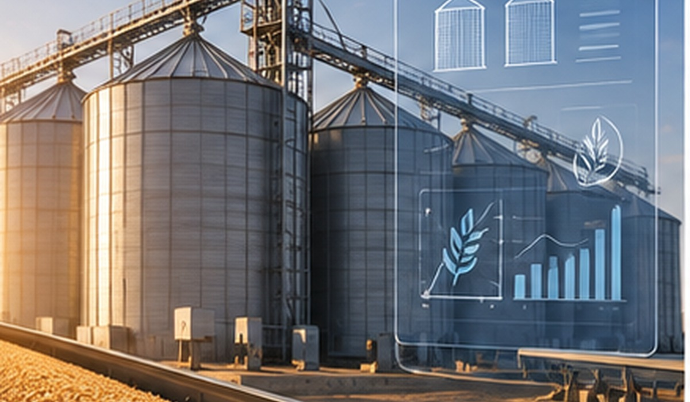

Business Analysis
01

Grain Silos Management System
Requirements and change-management support for a silo management system involving operational stakeholders and software delivery teams.
Contributions
- Gathered and analyzed change requests from silo stakeholders.
- Prepared SRS, PRDs, and user stories.
- Collaborated with developers during implementation.
- Followed up on system testing and delivery alignment.